Doel
Ik zit in het tweede jaar Systeem- en Netwerkbeheer aan HOGENT en zoek een stageplaats voor 8 februari tot 27 mei 2027. Met Zabbix heb ik al gewerkt, maar Grafana en Prometheus waren nieuw voor mij. Daarom heb ik een klein monitoring-homelab gebouwd in VMware Workstation.
In deze fase heb ik er een pfSense-firewall bij gezet. De monitoring en de servers zitten nu in twee aparte netwerken en het verkeer ertussen loopt via de firewall. Dat is bewust zo: verkeer binnen één VMnet komt nooit langs de firewall, dus daar kan je ook geen regels op testen. Met twee netwerken kan dat wel.
Opbouw
Ik gebruik drie virtuele machines en drie virtuele netwerken. Alle VM's draaien Ubuntu Server 26.04.1, behalve de firewall (pfSense CE 2.9.0). Op mon-01 draaien Prometheus 3.15.0 en Grafana 13.2.3, op srv-01 node_exporter 1.12.1.
| VM | Rol | Netwerk | IP-adres |
|---|---|---|---|
| fw-01 | pfSense-firewall | WAN op VMnet8, LAN op VMnet2, OPT1 op VMnet3 | WAN 192.168.26.141 (DHCP), LAN 10.10.10.254/24, OPT1 10.10.20.254/24 |
| mon-01 | Prometheus en Grafana | VMnet2 (MONITORING) | 10.10.10.10/24 |
| srv-01 | te bewaken server met node_exporter | VMnet3 (SERVERS) | 10.10.20.11/24 |
| Windows-host | beheer van het lab | VMnet2 | 10.10.10.1/24 |
| Virtueel netwerk | Type | Subnet | Opmerking |
|---|---|---|---|
| VMnet8 | NAT | 192.168.26.0/24 | WAN-kant van de firewall, geeft internet |
| VMnet2 | host-only | 10.10.10.0/24 | monitoringnetwerk, host-adapter aan, DHCP uit |
| VMnet3 | host-only | 10.10.20.0/24 | servernetwerk, geen host-adapter, DHCP uit |
De firewall heeft op de twee interne netwerken het adres .254. Zo botst hij niet met de Windows-host, die op VMnet2 al 10.10.10.1 gebruikt.
Basis: Prometheus, Grafana en een alert
Voor de firewall kwam, had ik al een werkend monitoringlab. Ik maakte een Ubuntu Server 26.04.1-template, kloonde daarvan mon-01 en srv-01 en gaf ze een vast adres met netplan. Op srv-01 draait node_exporter 1.12.1, op mon-01 Prometheus 3.15.0 en Grafana 13.2.3.
In Grafana importeerde ik het dashboard Node Exporter Full (nummer 1860 van grafana.com) en koppelde ik Prometheus als datasource.

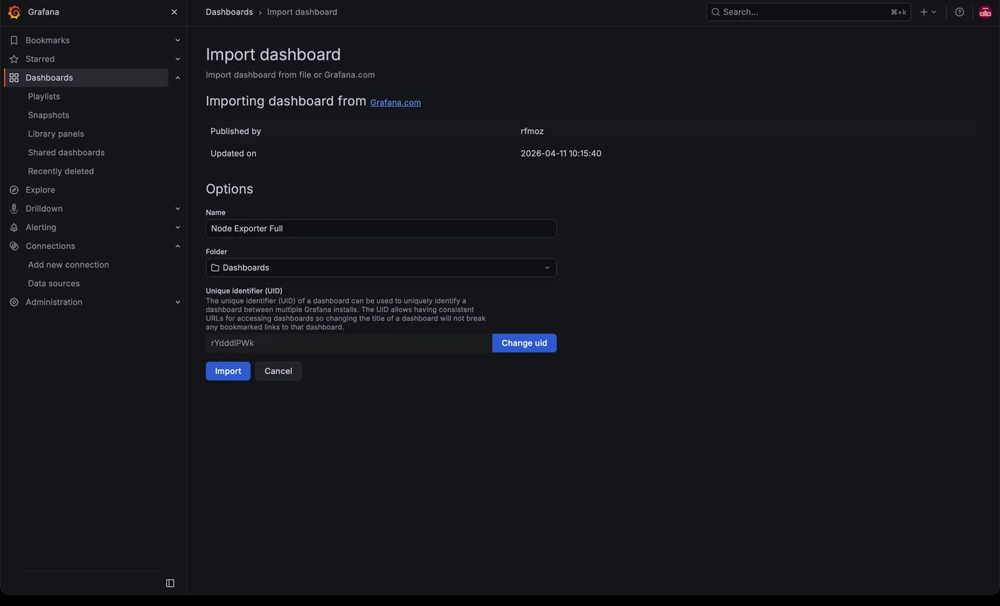

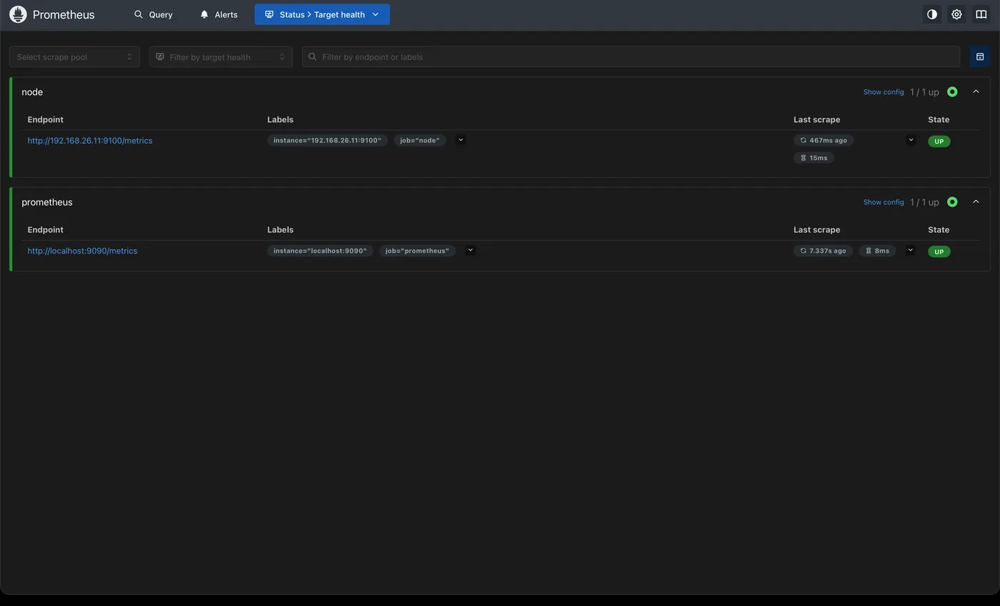

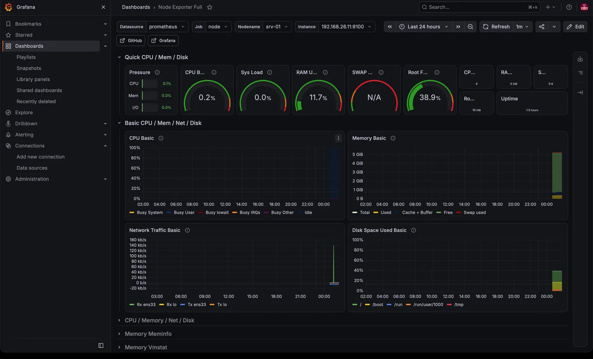
Daarna maakte ik de alertregel "srv-01 onbereikbaar" in Grafana, in map Homelab en groep node-checks, met een evaluatie om de 30 seconden. De regel kijkt naar de metric up van srv-01 en gaat af zodra die onder 1 zakt. Mijn eerste versie gebruikte "IS ABOVE 0", maar dat gaf het omgekeerde resultaat. Daarom staat er nu "IS BELOW 1".

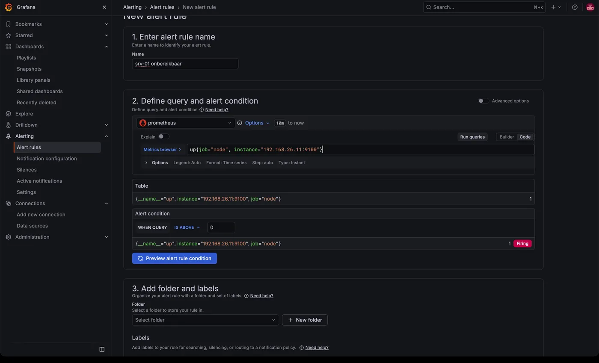
Om de regel te testen, maakte ik srv-01 onbereikbaar. Prometheus toont de target dan als DOWN, en de alertregel ging door de toestanden Normal, Pending en Alerting.

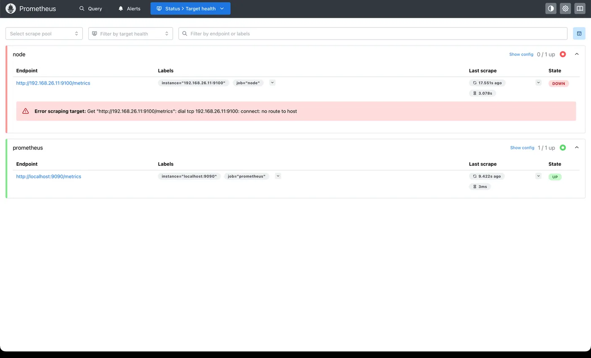

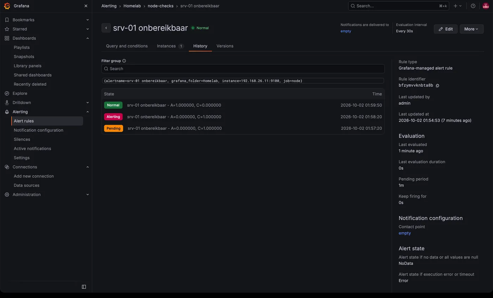
Stap 1: virtuele netwerken in VMware
In de Virtual Network Editor van VMware Workstation heb ik twee host-only netwerken ingesteld. Bij allebei staat DHCP uit, want ik geef alle adressen zelf.
- VMnet2 (monitoring): subnet 10.10.10.0 met masker 255.255.255.0 en de host-adapter aan. Zo kan ik vanaf mijn Windows-host bij de firewall en bij Grafana.
- VMnet3 (servers): subnet 10.10.20.0 met masker 255.255.255.0 en de host-adapter bewust uit. De host kan dit netwerk dus niet rechtstreeks bereiken en moet via de firewall.
VMnet8 (NAT, 192.168.26.0/24) bestond al en blijft de WAN-kant van de firewall.

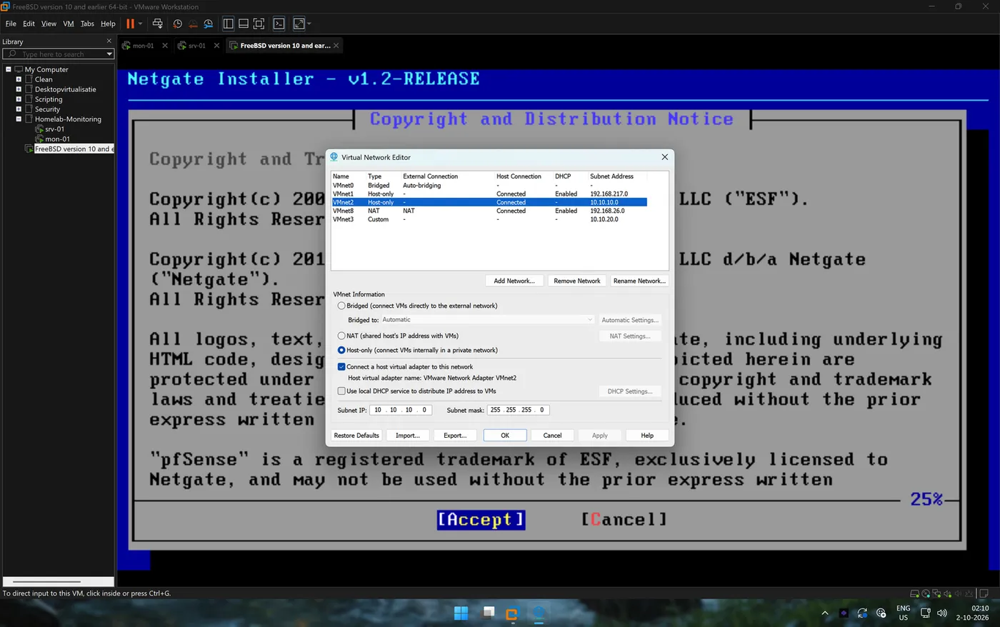

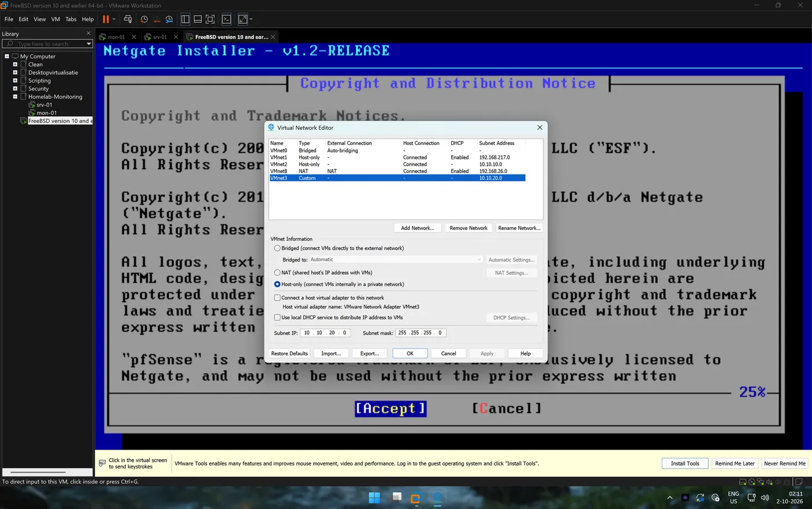
Stap 2: pfSense installeren en instellen
Ik gebruik pfSense CE 2.9.0 (zo staat het op het dashboard). De VM fw-01 heeft 1 vCPU, 1 GB RAM, 20 GB schijf en drie netwerkkaarten: VMnet8, VMnet2 en VMnet3. Als gasttype staat "FreeBSD version 10 and earlier 64-bit". De map van de VM heeft nog de standaardnaam van de wizard, maar in VMware heet hij fw-01. Ik installeerde met de Netgate Installer v1.2 vanaf een ISO en koppelde die daarna los.

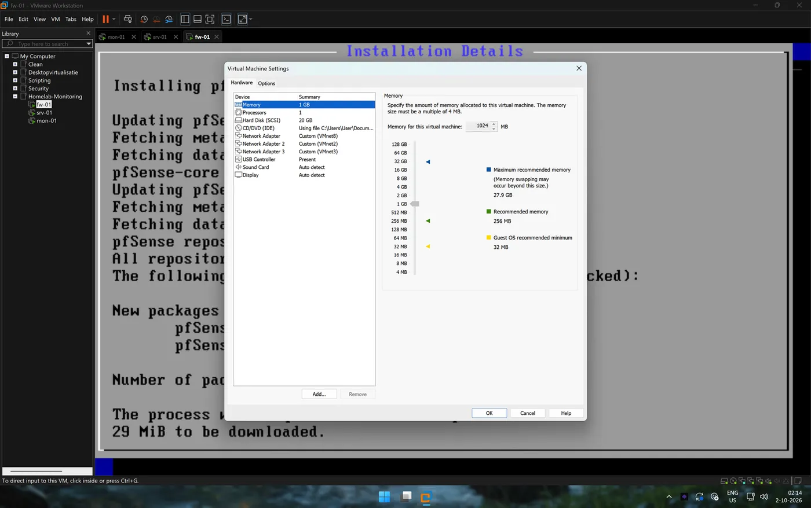
Interfaces koppelen. In het consolemenu koos ik optie 1 en wees ik de kaarten zo toe: em0 is WAN (VMnet8), em1 is LAN (VMnet2) en em2 is OPT1 (VMnet3).

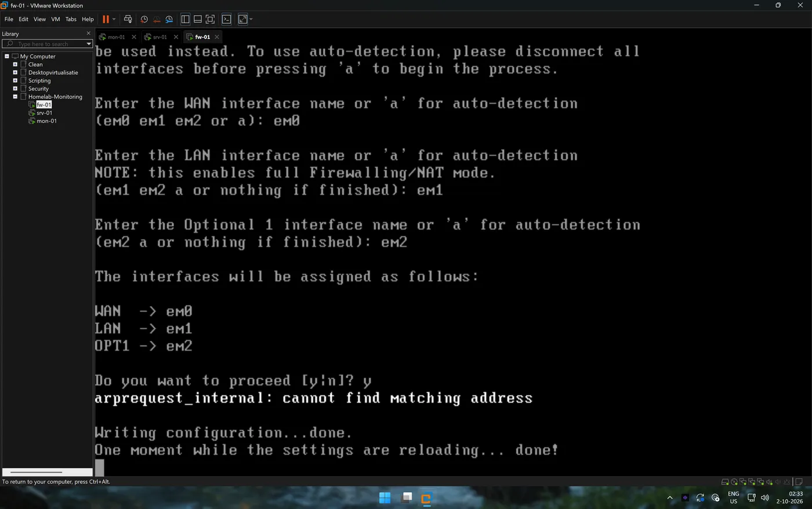
IP-adressen. Met optie 2 gaf ik LAN het vaste adres 10.10.10.254/24 en OPT1 10.10.20.254/24, allebei zonder DHCP. De WAN-kant kreeg 192.168.26.141 via DHCP van het NAT-netwerk.

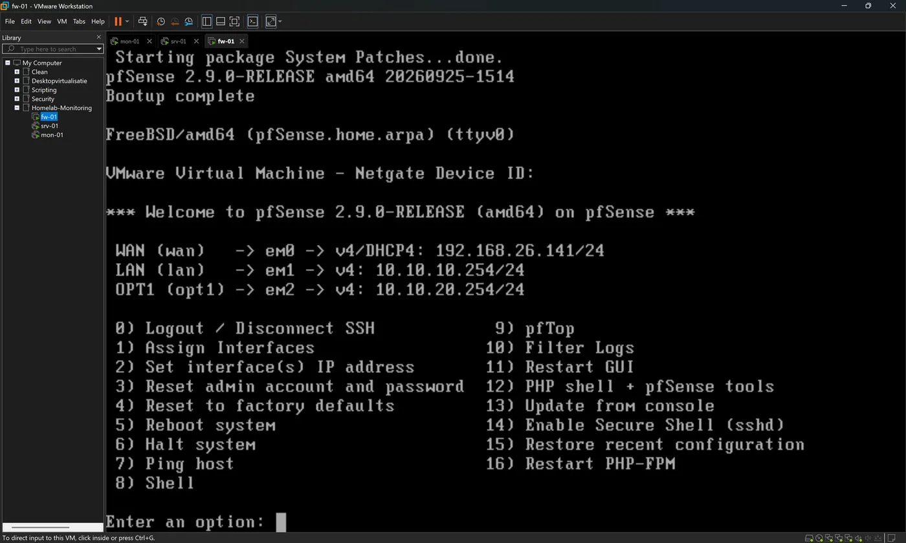
Setup-wizard. Daarna opende ik https://10.10.10.254 op mijn Windows-host. Het certificaat is zelfondertekend, dus de browser geeft een waarschuwing die ik moest bevestigen. In de wizard stelde ik dit in:
- Hostname
fw-01en domeinlab.home.arpa - DNS-servers 1.1.1.1 en 8.8.8.8
- WAN op DHCP, met "Block RFC1918 Private Networks" uit. Mijn WAN-netwerk is zelf privé (192.168.26.0/24), en met die optie aan zou pfSense het verkeer van daar blokkeren.
- Een nieuw wachtwoord voor admin, zodat het standaardwachtwoord weg is
Tot slot hernoemde ik LAN naar MONITORING en OPT1 naar SERVERS. In de firewallregels staat zo "MONITORING net" in plaats van "LAN net", en dat leest veel duidelijker.
Stap 3: beheer vanop mijn Mac
Ik werk via RDP vanop mijn Mac op de Windows-host waar VMware draait. De host zit ook op Tailscale. Mijn Mac kent de netwerken 10.10.10.0/24 en 10.10.20.0/24 niet, dus ik laat de host het verkeer doorsturen met een portproxy. De host zit zelf wel in VMnet2 en kan dus bij de firewall en bij mon-01.
Het adres van de host op VMnet2. Omdat DHCP uit staat, kreeg de adapter "VMware Network Adapter VMnet2" een automatisch adres (169.254.x.x). Ik stelde 10.10.10.1/24 handmatig in, zonder gateway, zodat mijn internet via de gewone netwerkkaart blijft lopen.
New-NetIPAddress -InterfaceAlias "VMware Network Adapter VMnet2" -IPAddress 10.10.10.1 -PrefixLength 24pfSense via de Mac. Poort 8443 op het Tailscale-adres van de host gaat naar poort 443 van de firewall. De Windows-firewallregel laat die poort enkel toe op het Tailscale-adres, dus niemand op mijn thuisnetwerk kan er via mijn wifi bij.
netsh interface portproxy add v4tov4 listenaddress=<tailscale-ip> listenport=8443 connectaddress=10.10.10.254 connectport=443
New-NetFirewallRule -DisplayName "pfSense via Tailscale" -Direction Inbound -Protocol TCP -LocalPort 8443 -LocalAddress <tailscale-ip> -Action AllowpfSense weigerde eerst de aanvraag (zie "Problemen"). Dat los je op door het Tailscale-adres toe te voegen onder System > Advanced > Admin Access > Alternate Hostnames.
SSH naar de servers. Voor mon-01 maakte ik een portproxy van poort 2210 naar 10.10.10.10:22. srv-01 zit in VMnet3, waar de host geen adapter heeft. Daarom kreeg Windows een route naar dat netwerk via de firewall, en een portproxy van poort 2211 naar 10.10.20.11:22.
route -p add 10.10.20.0 mask 255.255.255.0 10.10.10.254
netsh interface portproxy add v4tov4 listenaddress=<tailscale-ip> listenport=2210 connectaddress=10.10.10.10 connectport=22
netsh interface portproxy add v4tov4 listenaddress=<tailscale-ip> listenport=2211 connectaddress=10.10.20.11 connectport=22Op de Mac log ik dan in met ssh -p 2210 labadmin@<tailscale-ip> voor mon-01 en met poort 2211 voor srv-01. In de logs van de VM's zie ik als herkomst 10.10.10.1, het adres van de host, en niet het adres van mijn Mac. De verbinding naar srv-01 loopt zo wel door de firewall, en dat is dus ook iets waar mijn firewallregels rekening mee moeten houden.
Stap 4: mon-01 en srv-01 achter de firewall zetten
Beide servers hingen nog aan VMnet8 met een adres in 192.168.26.0/24. Ik verhuisde ze in twee stappen: eerst de netwerkkaart in VMware, dan het IP-adres in netplan. Dat deed ik via de VMware-console en niet via SSH, want de SSH-verbinding valt weg zodra het adres verandert.

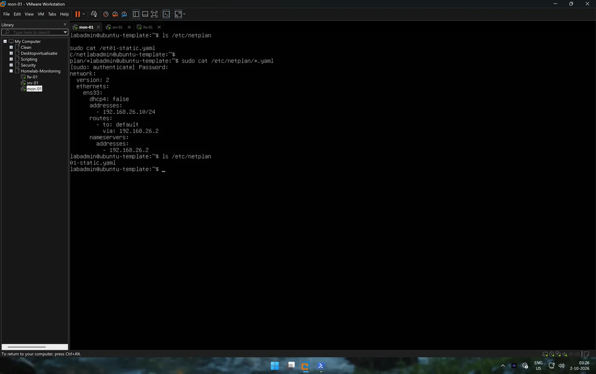

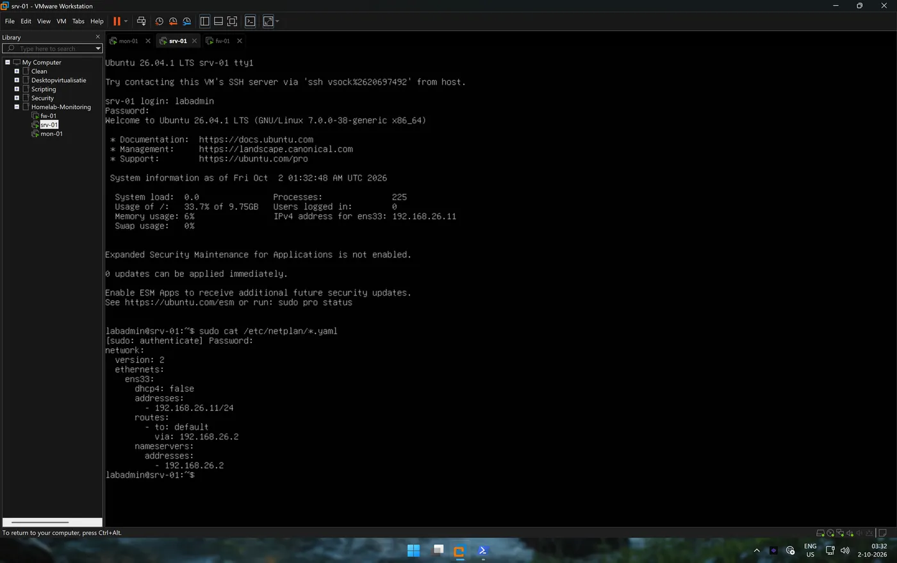
In VMware zette ik de netwerkkaart van mon-01 op Custom VMnet2 en die van srv-01 op Custom VMnet3. Daarna schreef ik het bestand /etc/netplan/01-static.yaml opnieuw.
| VM | Adres | Gateway en DNS |
|---|---|---|
| mon-01 | 10.10.10.10/24 | 10.10.10.254 (pfSense), daarnaast 1.1.1.1 |
| srv-01 | 10.10.20.11/24 | 10.10.20.254 (pfSense), daarnaast 1.1.1.1 |
Ik paste de configuratie toe met sudo netplan try. Die draait de wijziging na 120 seconden vanzelf terug als ik niet bevestig, zodat ik mezelf niet kan buitensluiten.
Om dit te laten werken, maakte ik op pfSense onder Firewall > Rules > SERVERS een tijdelijke regel "allow all". Een interface zonder regels blokkeert in pfSense alle binnenkomend verkeer, waardoor srv-01 zelfs de firewall niet kon bereiken. De regel is tijdelijk, want ik scherp hem aan in de volgende fase.
Controle: vanaf mon-01 en srv-01 werkt een ping naar de firewall, naar 1.1.1.1 en naar een domeinnaam, en vanaf de Windows-host naar 10.10.10.10. SSH naar beide servers werkt vanaf mijn Mac.
Stap 5: Prometheus en Grafana aanpassen
Prometheus zocht srv-01 nog op het oude adres. In /etc/prometheus/prometheus.yml verving ik 192.168.26.11 door 10.10.20.11 (en 192.168.26.10 door 10.10.10.10), controleerde ik de syntax met promtool check config en herstartte ik Prometheus.
sudo sed -i 's/192.168.26.11/10.10.20.11/g; s/192.168.26.10/10.10.10.10/g' /etc/prometheus/prometheus.yml
promtool check config /etc/prometheus/prometheus.yml
sudo systemctl restart prometheusOp de pagina Target health staan beide targets weer op UP, en srv-01 wordt nu gescrapet via 10.10.20.11:9100. Het verkeer gaat dus van mon-01 via pfSense naar het servernetwerk.

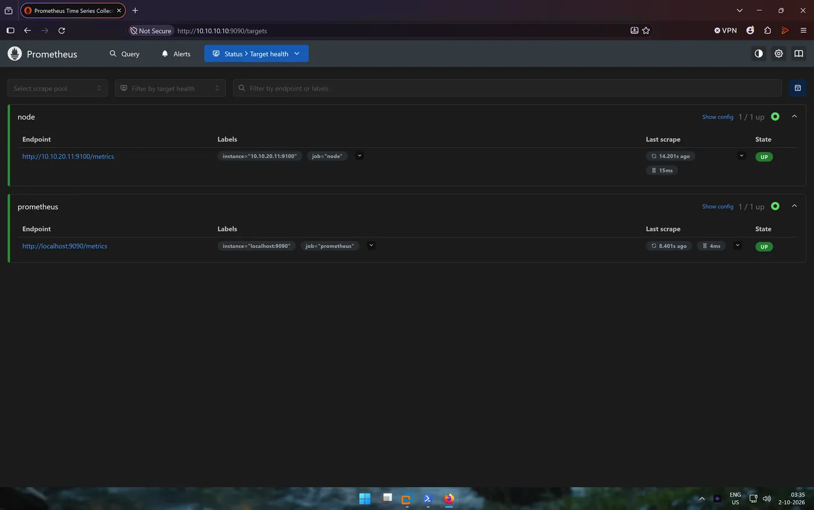
In Grafana toont het dashboard Node Exporter Full (1860) met Instance = 10.10.20.11:9100 weer de metingen van srv-01. Het instance-label is mee veranderd met het adres, dus de oude grafieken blijven bestaan onder het oude label (192.168.26.11:9100).

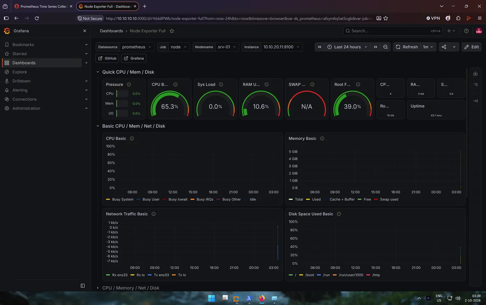
De alertregel "srv-01 onbereikbaar" filterde nog op het oude adres. Ik paste de query aan naar up{job="node", instance="10.10.20.11:9100"}. De regel staat weer op Normal. Het contactpunt is nog leeg, dus er gaat nog geen melding naar iemand: de regel wordt alleen in Grafana zelf zichtbaar.

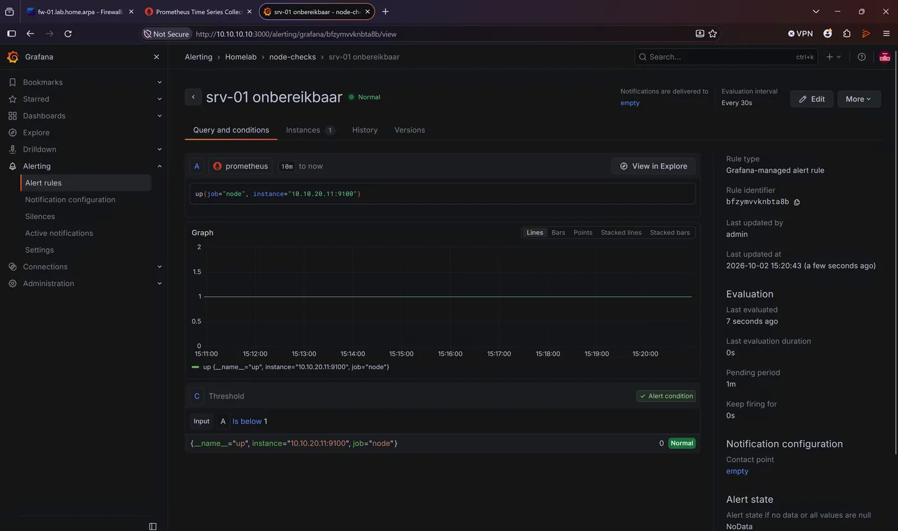
Stap 6: firewallregels
Ik begon met open regels en scherpte ze aan. pfSense leest regels van boven naar onder en de eerste regel die past, wint. Verkeer dat antwoordt op een toegelaten verbinding, wordt automatisch doorgelaten. Dit zijn de regels die er nu staan:
| Interface | Nr | Actie | Bron | Bestemming | Poort | Doel |
|---|---|---|---|---|---|---|
| MONITORING | 1 | Pass | host (10.10.10.1) | SERVERS subnets | TCP 22 | SSH-beheer vanaf de host |
| MONITORING | 2 | Pass | mon-01 (10.10.10.10) | srv-01 (10.10.20.11) | TCP 9100 | Prometheus haalt metrics op |
| MONITORING | 3 | Block | MONITORING subnets | SERVERS subnets | alles | rest naar de servers blokkeren |
| MONITORING | 4 | Pass | MONITORING subnets | alles | alles | standaardregel, internet |
| SERVERS | 1 | Block | alles | MONITORING subnets | alles | servers mogen niet naar de monitoring |
| SERVERS | 2 | Pass | alles | alles | alles | internet en firewall (DNS) |
De regels voor het blokkeren staan boven de regels die alles toelaten. Staat een blokregel eronder, dan wordt hij nooit bereikt.

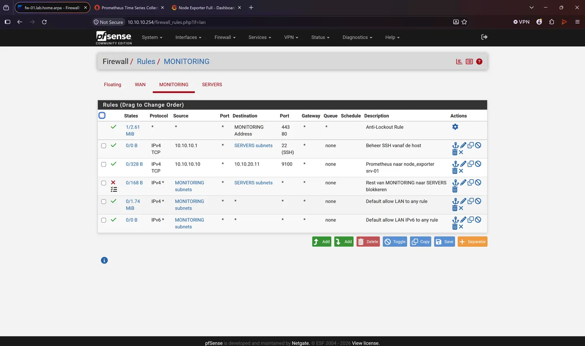

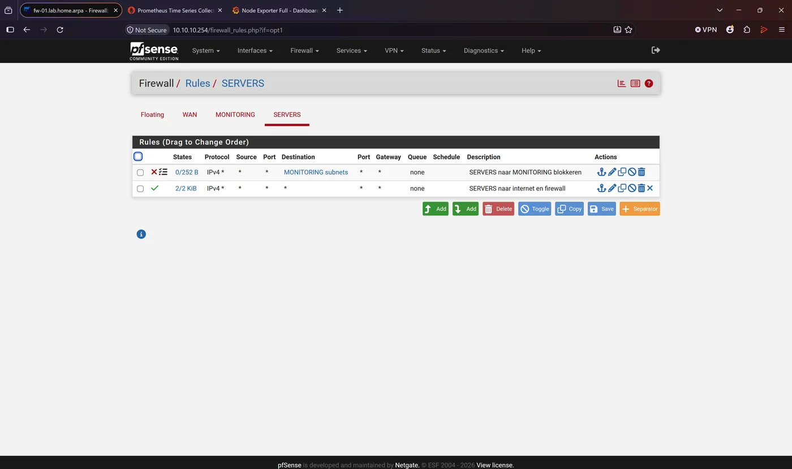
Tests. Ik testte elke regel met een verwachte uitkomst:
| Test | Waar | Verwacht | Resultaat |
|---|---|---|---|
nc -zv 10.10.20.11 9100 | mon-01 | verbinding lukt (regel 2) | gelukt |
ping 10.10.20.11 | mon-01 | geen antwoord (regel 3) | geen antwoord |
ping 10.10.20.254 en ping 1.1.1.1 | srv-01 | antwoord (regel 2) | antwoord |
ping 10.10.10.10 | srv-01 | geen antwoord (geblokkeerd) | geen antwoord |
| SSH vanaf mijn Mac naar srv-01 | Mac | blijft werken (regel 1) | gelukt |
| Target health in Prometheus | mon-01 | alle targets UP | UP |

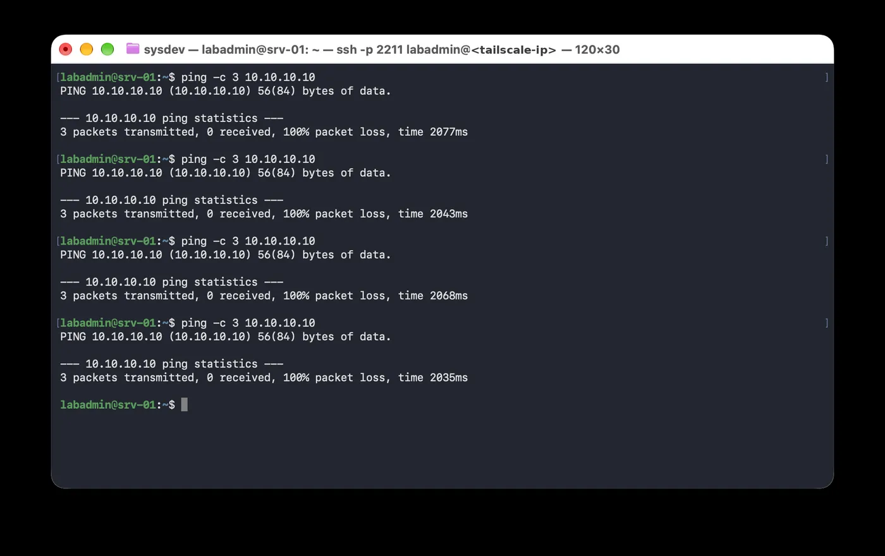
De geblokkeerde pogingen zie ik terug in de firewall-log van pfSense, met de naam van mijn eigen regel erbij: srv-01 naar mon-01 wordt tegengehouden door de blokregel op SERVERS en mon-01 naar srv-01 (de ping) door de blokregel op MONITORING. Prometheus laat zien dat de scrape door de firewall heen blijft werken.

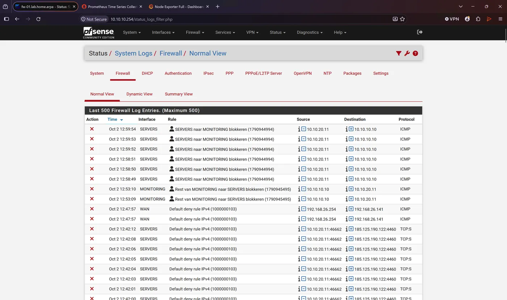

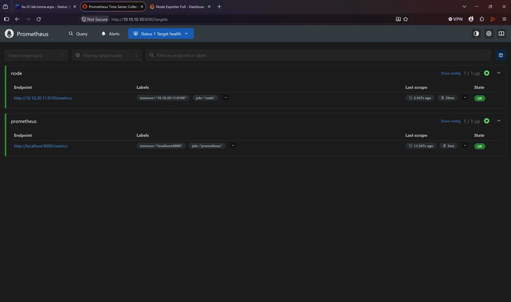
Stap 7: de firewall zelf bewaken
Naast de server wilde ik ook de firewall zelf in Prometheus en Grafana zien. pfSense heeft geen node_exporter standaard, maar in System > Package Manager bestaat een pakket node_exporter. Ik installeerde versie 1.11.0 en schakelde het in bij Services. Ik koos als interface MONITORING, zodat de exporter alleen op 10.10.10.254 luistert en niet op de WAN-kant. De poort bleef 9100 en de standaardcollectors liet ik staan.

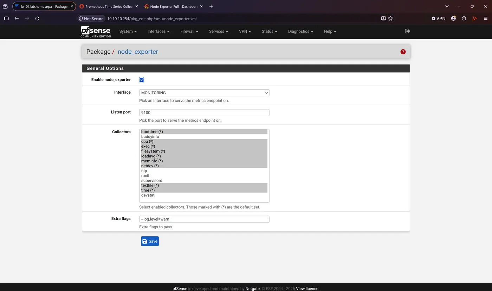
Met curl -s http://10.10.10.254:9100/metrics | head -5 op mon-01 testte ik of de exporter antwoordt. Dat werkte: ik kreeg regels terug die met # HELP beginnen.
Daarna maakte ik een regel op MONITORING die Prometheus (10.10.10.10) toelaat naar het adres van de firewall op poort 9100. Strikt genomen liet de standaardregel "Default allow LAN to any" dat verkeer al door, maar met een eigen regel staat het expliciet in de regellijst. Ik maakte de regel door de Prometheus-regel van srv-01 te klonen en alleen de bestemming en de beschrijving aan te passen. Hij staat boven de blokregel.

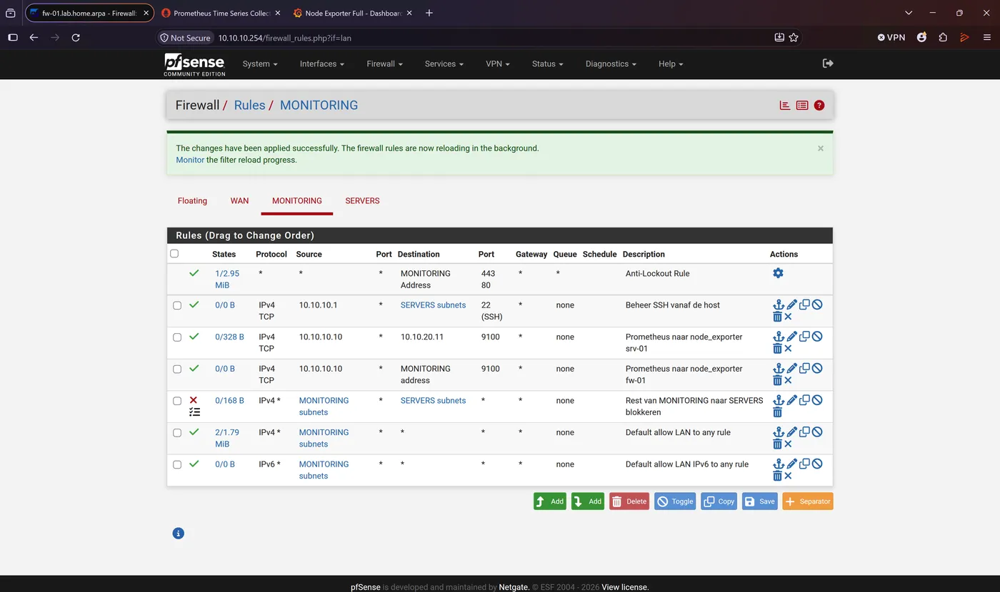
In /etc/prometheus/prometheus.yml voegde ik een derde job toe, pfsense, met als target 10.10.10.254:9100. Eerst maakte ik een back-up, daarna controleerde ik de configuratie met promtool check config en herstartte ik Prometheus. De target stond meteen op UP.
In Grafana koos ik in het dashboard Node Exporter Full bij Job de waarde pfsense. CPU, netwerkverkeer per interface (em0, em1, em2) en schijfgebruik werken. Memory, Swap en Pressure tonen geen gegevens. Waarschijnlijk komt dat doordat dit dashboard voor Linux gemaakt is en FreeBSD andere metricnamen gebruikt, maar dat heb ik niet verder uitgezocht. De eerste minuut na de herstart toonde CPU Busy een veel te hoge waarde; na een paar minuten stond die op 0,6%.

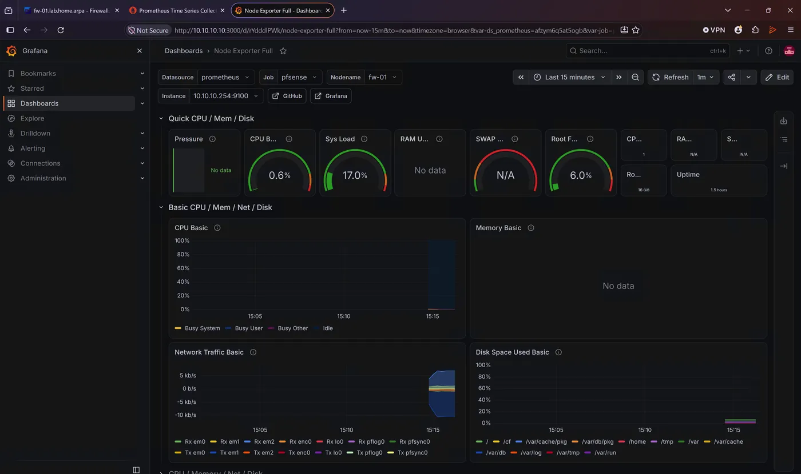
Problemen en oplossingen
| Probleem | Oorzaak | Oplossing |
|---|---|---|
| Bij het toewijzen van de interfaces typte ik em1 als WAN | Ik verwisselde de kaarten bij de vraag naar de WAN-interface | Optie 1 opnieuw uitgevoerd met WAN = em0, LAN = em1, OPT1 = em2 |
| De console van fw-01 reageerde niet meer en de VM herstartte zichzelf soms | Het gebeurde telkens als ik van mijn RDP-sessie naar mijn Mac ging en terug. In het VMware-log staat geen fout, wel een herstart die de gast zelf vraagt. Een Suspend en Resume van fw-01 gaf hetzelfde | Tijdens het instellen van de console in één sessie blijven, fw-01 uitzetten met Power Off en niet met Suspend. Daarna alles via de webinterface doen |
| De webinterface van pfSense was niet bereikbaar vanaf de host | De VMnet2-adapter had 169.254.x.x, omdat DHCP uit staat | Handmatig 10.10.10.1/24 ingesteld |
| pfSense gaf een HTTP_REFERER-melding via de Mac | pfSense kent het Tailscale-adres niet als zijn eigen adres | Het adres toegevoegd bij Alternate Hostnames |
| SSH naar 10.10.10.10 op de Mac gaf geen antwoord | De Mac kent het netwerk 10.10.10.0/24 niet | Een portproxy op de Windows-host (zie stap 3) |
| SSH naar een gekloonde VM faalde met "no hostkeys available" | De SSH-hostkeys ontbraken na het klonen van de template | sudo ssh-keygen -A en daarna sshd herstarten |
| Mijn eerste blokregel liet verkeer door | De actie stond op Pass in plaats van Block, en ik had nog niet op Apply Changes geklikt | Actie op Block gezet en de wijzigingen toegepast. Controle: rood kruisje bij de regel en geen gele balk meer |
| SSH vanaf de Mac naar de servers viel weg | De portproxy-regels bestonden nog, maar de host luisterde er niet meer op. Waarschijnlijk viel de listener weg nadat Tailscale of een netwerkadapter herstartte | De portproxy gewist met netsh interface portproxy reset en de regels opnieuw aangemaakt |
| Een blokregel deed niets, terwijl hij er wel stond | De volgorde klopte niet: de blokregel stond boven de Pass-regels voor SSH en Prometheus (en bij een eerdere poging stond hij er net onder), en ik had niet altijd op Apply Changes geklikt | De Pass-regels naar boven gesleept, opgeslagen en Apply Changes uitgevoerd. Daarna getest met nc op poort 9100 (lukt) en ping (geen antwoord) |

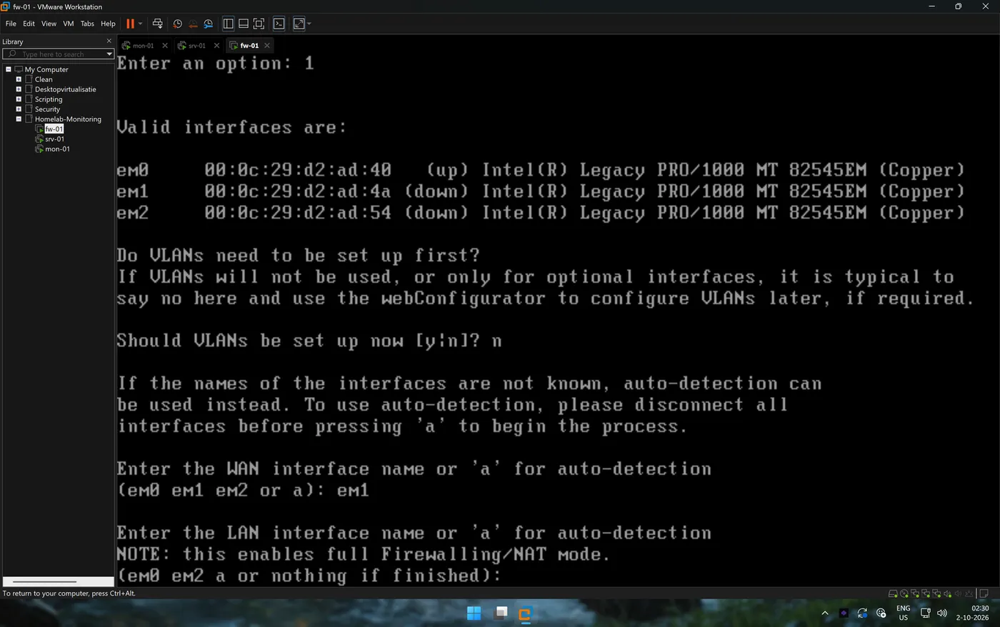

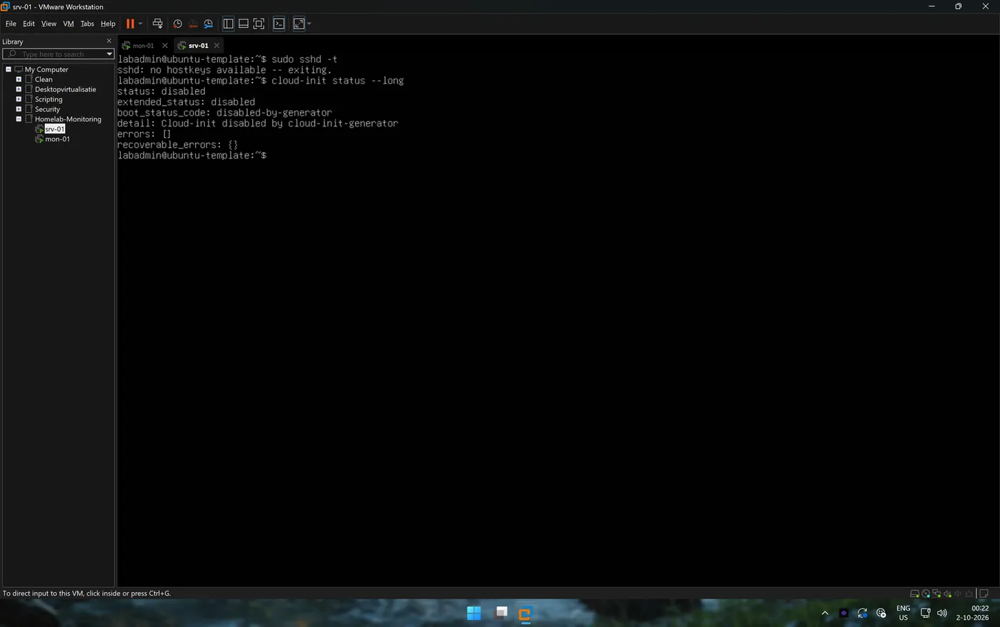

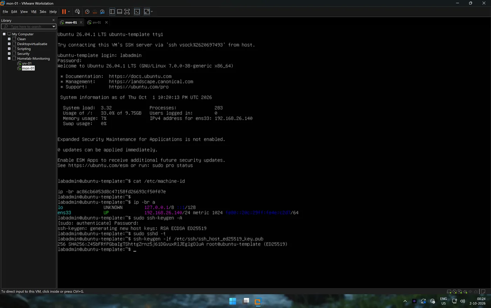
Wat nog komt
De firewall en de servers werken nu zoals bedoeld. Dit wil ik nog doen:
- Alertmanager toevoegen voor meldingen.
Korte samenvatting
Ik heb een monitoring-homelab gebouwd in VMware: Prometheus en Grafana bewaken een Ubuntu-server met node_exporter, en een alertregel meldt wanneer die server wegvalt. Daarna heb ik een pfSense-firewall toegevoegd en de monitoring en de server in twee aparte netwerken gezet. Het verkeer ertussen loopt nu via de firewall, en ik beheer alles vanop mijn Mac via mijn Windows-host. Daarna heb ik firewallregels geschreven en getest: de monitoring haalt gegevens op van de server, maar de server kan niet terug naar de monitoring. Ook de firewall zelf staat nu als target in Prometheus.